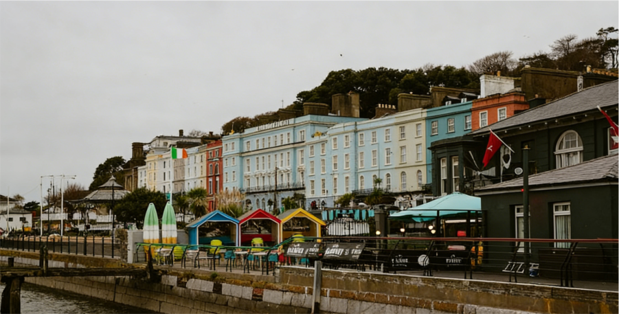
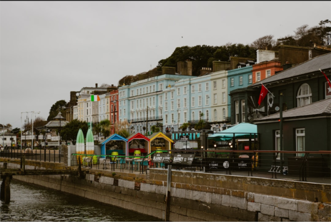

National Recognition
Awarded Best Arts Festival in Ireland for 3 consecutive years (2023-2025)
15 years of celebrating creativity in the heart of Galway
The Galway Arts Festival exists to celebrate and champion artistic excellence, making world-class cultural experiences accessible to everyone in our community.
We believe art has the power to transform lives, build understanding, and strengthen communities. Through diverse programming across visual arts, performance, music, and more, we create spaces where creativity flourishes and everyone can discover the joy of artistic expression.

Making a lasting impact on artists and communities
Awarded Best Arts Festival in Ireland for 3 consecutive years (2023-2025)
Over 250,000 people have experienced our festival since inception
Launched careers of 120+ emerging artists now exhibiting internationally
85% of all events remain free or low-cost to ensure art is accessible to all
Key milestones in 15 years of artistic celebration
Galway is Ireland’s cultural heart, a vibrant city where creativity flows through every street and gathering place. Our festival transforms the entire city into an open-air gallery and performance space.
From historic venues to contemporary spaces, from intimate galleries to public squares, the festival brings art to unexpected places, making Galway itself part of the artistic experience.
